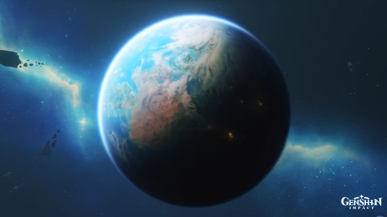

Teyvat & Unknown · Geography & Locations
Teyvat: The Known World
Teyvat is the world where the Traveler searches for their missing sibling and encounters its nations, histories, and powers.

The Continental Tapestry
Teyvat is the known continental world that serves as the stage for Genshin Impact, comprising seven distinct nations ruled by the Seven Archons, alongside forgotten ancient ruins beneath the earth and the mysterious Dark Sea beyond the borders. From the windy plains of Mondstadt and the stone cliffs of Liyue to the islands of Inazuma, the rainforests and deserts of Sumeru, the elevated waters of Fontaine, the volcanic canyons of Natlan, and the frozen tundra of Snezhnaya, Teyvat is a living masterpiece of elemental harmony.
Life across Teyvat is fundamentally driven by the seven elements, which circulate through the continental Ley Line network like blood through veins. Mortals gifted with strong, unyielding ambitions are granted 'Visions' by the heavens, allowing them to channel elemental energy and perform superhuman feats of combat, craftsmanship, and leadership.
The Cosmological Structure: The False Sky
While ordinary inhabitants gaze up at the sun, moon, and stars in wonder, the true cosmological architecture of Teyvat is deeply unnatural. During the Unreconciled Stars crisis, the Fatui Harbinger Scaramouche discovered an earth-shattering secret that was later confirmed by Dottore and Pierro: 'The stars, the sky... it's all a gigantic hoax. A lie.'
Teyvat is enclosed within a colossal metaphysical firmament known as the 'False Sky'—a barrier constructed by Celestia and the Primordial One to shield the world from the hostile, alien void outside, while simultaneously keeping humanity locked in an artificial terrarium. Below the earth lies the Abyss, a swirling realm of primordial chaos that constantly seeks to break through the Ley Lines and dissolve the world's structured reality.
Cyclic History and Celestial Judgment
Teyvat's history is not linear; it is cyclical. Long before the Seven Archons, the continent was ruled by the Seven Dragon Sovereigns. They were toppled by the Primordial One (the First Descender), who established a unified human civilization. However, whenever human kingdoms advanced too far, uncovered cosmic secrets, or contacted the Abyss, Celestia deployed Celestial Nails to annihilate them, resetting civilization and burying history beneath layers of stone.
Civilizations such as Sal Vindagnyr, Enkanomiya, Gurabad, Remuria, and Khaenri'ah all fell victim to this cyclical cataclysm. The ruins of these fallen realms, littered with inactive Ruin Guards and cryptic stone murals, stand as silent warnings to the surface nations that the peace enforced by the gods comes with a terrifying, conditional price.
The Role of Descenders in Shaping Destiny
In this rigidly ordained world where mortal destinies are written into the stars by the Heavenly Principles, only rare entities known as 'Descenders'—beings who originate from outside Teyvat—possess the power to rewrite fate. Because Descenders are not native to this world, their memories and actions cannot be erased or manipulated by Irminsul.
The Traveler, confirmed by Nahida to be the Fourth Descender, represents an unprecedented wildcard in Teyvat's cosmic equation. As the Traveler journeys across the seven nations, witnessing the struggles of mortals and the burdens of gods, they are gradually weaving a new tapestry of destiny—one that may finally shatter the false sky and allow the people of Teyvat to claim their own freedom.
This is an original CoreGG reading guide, not an official HoYoverse article or a reproduction of the game text. Source links below identify the records used so you can check the original context.
Sources & references
Check these sources for the original game text and reference trail.